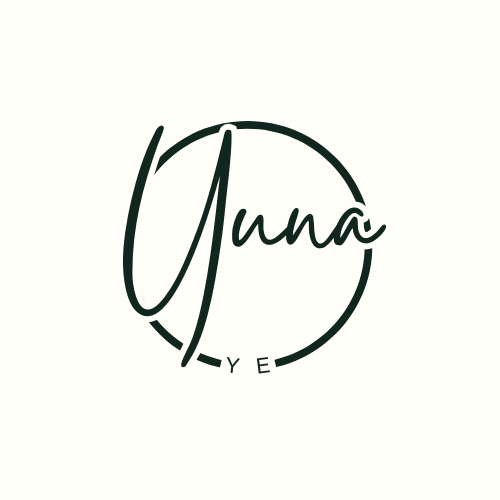

Bhaalspawn
Character-focused vector artwork inspired by Baldur’s Gate 3, created in Adobe Illustrator.

YUNA YE. A signal is waitingDESIGNER · DEVELOPER · STORYTELLER
I’m Yuna Ye, a web developer and graphic designer creating thoughtful visuals and interactive worlds worth getting lost in.
SELECTED PROJECTS / 2025—26
A mix of illustration, design, and experiments in making the web feel more human.
Character-focused vector artwork inspired by Baldur’s Gate 3, created in Adobe Illustrator.
A hand-planned, anime-inspired vector portrait exploring line, shape, and personal style.
A friendly cat-themed site concept with custom branding, a history page, and nine cat profiles.
An internship project creating a game logo for a studio.
A stylized character illustration exploring costume design, silhouette, and expressive vector detailing.
An experimental motion study blending atmospheric visuals, surreal textures, and artifact-inspired storytelling.
A short sound-driven piece built around mood, tension, and an old-world romantic atmosphere.
AN INTERACTIVE STORY BY YUNA YE
A little mystery is hiding in this portfolio. Follow the clues in the projects, enter what you find, and see where the signal leads.
A fictional, self-contained experience. No outside searching or personal information needed.
TRANSMISSION 001 // STATUS: WAITING
“There are nine of us. We remember the way in.”
 BROOKLYN, NEW YORK
BROOKLYN, NEW YORK
A LITTLE ABOUT ME
I’m a web developer and graphic designer from Brooklyn, New York, currently earning my associate degree in Multimedia Programming and Design at Borough of Manhattan Community College (BMCC), part of CUNY.
I’m especially interested in creating alternate reality game (ARG) websites that combine web design, puzzles, codes, and interactive storytelling. I enjoy horror and building online experiences where visitors become active participants, discovering clues and uncovering a larger story.
My process begins with a concept and storyline, then moves through puzzle planning, visual design, and code. I’m developing my skills in web development, graphic design, interaction design, and storytelling—and hope to keep making digital experiences that are engaging and fun to investigate.
Let’s make somethingHAVE A PROJECT IN MIND?
I’d love to hear what you’re working on. Send me a note and tell me all about it.
yunaye9@gmail.comBrooklyn, NY · (917) 622-4673